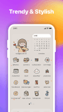

ThemeKit app 版本进化史：从"换图标工具"到"桌面装修一条龙"
一款主打手机桌面美化的应用，如何在几年里从一个简陋的图标替换小工具，长成主题库、小部件编辑器、DIY 画布全链路覆盖的一站式方案？从当前版本倒推它的迭代逻辑。
写在前面：现在这版，是什么状态？
我打开 ThemeKit 的时候，说实话有点感慨。
这已经不是两三年前那个在应用宝搜"图标替换"才会出现在第三页的小工具了。现在它的主题库里挂着原神、咒术回战、高达、链锯人、鬼灭之刃这些头部 IP 的成体系主题，每个主题附带的小部件从时钟到天气到倒计时一应俱全，甚至内置了一个可以从零搭建小部件的 DIY 编辑器——能选尺寸、拖元素、调配色、存模板。Google Play 评分 4.4 星，下载量过千万，免费版靠广告撑、Pro 订阅卖无广告和高级主题，这套商业化路径跑通了——去它的官网逛一下就能直观感受到这种变化。
但你如果翻开它的ThemeKit app文档，会发现一个有意思的空白：样本文档几乎只讲"当前能做什么"，不讲"这些功能是什么时候加的"。没有 changelog 页，没有版本历史，连安装说明里都只提了"Android 7.1 及以上"这种兼容性要求，没说它从哪个版本开始放弃 Android 6.0、从哪个版本开始支持 iOS、从哪个版本加的 DIY 编辑器。
这种留白本身就是一种信号——让我们从"它现在长这样"倒推"它是怎么一步步走到今天的"。

来路：从"换图标"到"换整个桌面"，中间跳过了哪些路？
移动端美化工具这个赛道，其实一直有一个隐形的天花板：不改系统分区的前提下，你能做的事有限。
早期的图标替换工具走的路线很简单——扫你设备上的 App，对每个 App 生成一个带新图标的快捷方式。Android 上这套逻辑至今没变：ThemeKit 扫描应用、逐个生成快捷方式、引导你拖到原图标的位置、删旧的。iOS 更麻烦，走描述文件路线，安装一次全换完，重启还会短暂恢复再变回。
这个底层限制，决定了所有桌面美化工具的竞争焦点不在"能不能换图标"——大家都能——而在"换完图标之后还能不能多做一点"。
ThemeKit 的迭代路径，就是在这个天花板上一点一点往上踮脚。
第一阶段：主题库先于小部件
如果你把市面上的竞品扫一遍，会发现一个普遍顺序：先有主题（图标包 + 壁纸），后有小部件。ThemeKit 也不例外。现在主题库里动漫风是更新频率最快、数量最多的分类，原神就有 15+ 套，从角色限定到世界观通用版都覆盖，每套带 6~10 款小部件。但早期版本的主题库大概率只有图标包和壁纸——小部件是后来追加的，而且一开始可能只是简单的时钟和电池，远没有现在这么丰富。
这个顺序背后是产品逻辑：主题库是最容易做起来的，找一批图标设计师画图标包、配几张壁纸，上架就能卖。用户感知强、传播成本低。等到主题库积累了第一批种子用户，才会想"既然图标和壁纸都换了，时钟也应该换"——小部件于是变成了补全体验的必要环节，而不是一开始就有的卖点。
第二阶段：免费版 + 广告 + Pro 的双层结构
现在的免费版 / Pro 订阅对照表很清晰：免费版一键应用前弹 15~30 秒广告，换每个图标都要看一条广告或攒金币；Pro 订阅直接应用、无广告、解锁 Pro 专属主题和高级小部件。
但这套机制显然不是第一天就想好的，早期用户都是直接下载 APK 试用，广告和订阅是后来才加上的。早期版本很可能是"先全免费"——开发者靠用户量积累口碑，等到产品形态稳定、核心用户群体形成，再引入变现层。从"广告插在哪里"这个细节就能看出来：广告不是在启动时弹的，而是在"点一键应用之前"和"换每个图标时"弹——这两个点恰好是用户最有转化意愿的时刻。说明开发者不是拍脑袋插广告，而是用了数据驱动的方式找到广告位。
第三阶段：DIY 编辑器——这是一次真正的跃迁
DIY 编辑器是我觉得 ThemeKit 进化史上最有野心的一步，因为它的方向和前两步完全不同。
前两步都是"给用户选好东西"——主题库让你挑图标包、壁纸、小部件；免费 / Pro 只是让你决定要不要花钱解锁更多选项。DIY 编辑器让用户自己造东西：选尺寸、增删元素、调颜色字体、保存为模板。你可以把时钟和日历拼在一起，可以在天气小部件上加一行自定义文字，可以把照片拼贴和电池显示组合起来。
市面上其他美化 App 的小部件通常是"固定模板 + 有限参数"——只能调大小和颜色，布局和功能逻辑是写死的。ThemeKit 的 DIY 编辑器打破了这个限制，等于把小部件的天花板从"模板库里有什么"抬到了"用户想象力有多丰富"。
这一步的意义远不止功能多了一个。它把 ThemeKit 从"主题消费平台"拉向了"主题创作平台"——如果用户能自己做小部件，就意味着他们还想分享自己的作品、给别人用。虽然样本文档里还没看到社区或分享功能的描述，但 DIY 编辑器的存在本身，就是在为社区铺垫基础设施。
规律：从迭代节奏看，团队一直在死磕什么？
讲完三个阶段，我们可以提炼一下 ThemeKit 几轮迭代里反复做的事和一直没做的事。
一直在死磕：跨平台一致性
Android 和 iOS 的美化路径从底层就不一样——Android 走快捷方式层，iOS 走描述文件。ThemeKit 在两条线上都做了，而且文档里对两边的差异讲得很清楚：Android 需要逐个 App 拖位置、系统 App 图标改不了；iOS 安装描述文件一次性全换、重启后会短暂恢复。但两边的 DIY 编辑器、主题库、小部件系统是一致的。说明团队从一开始就想做一套跨平台的体验，而不是先把一个平台做到极致再考虑另一个。
一直在死磕：动漫 / IP 主题的密度
动漫风主题是更新最快、数量最多的分类，原神一个 IP 就有 15+ 套，还持续出新作。这不是偶然——二次元用户对桌面美化的付费意愿最高，而且 IP 主题自带传播属性。团队显然把"押注头部 IP"当成了主题库运营的核心策略，从样本里列的 IP 清单就能看出：原神、咒术回战、高达、链锯人、鬼灭之刃，都是近几年热度持续的番。
一直没做：社区与 UGC 闭环
DIY 编辑器已经上线了，但样本文档里没看到"分享你的小部件到社区""从社区下载其他用户做的小部件"这类功能。也没看到用户点赞、收藏、关注创作者的设计。这意味着 DIY 编辑器目前还是一个单端工具，还没变成一个平台功能。
一直没做：系统级美化的深度
Android 上 ThemeKit 明确说自己"不改系统分区"，系统 App 图标替换不了。iOS 上描述文件路线也有重启恢复的问题。它没有尝试 root / Magisk 模块这条路，也没有做桌面启动器——它的定位始终是"覆盖层美化"，而不是"替换系统层"。

预判：照这个路线，下一步大概率会走向哪里？
先说清楚：这是从迭代规律推的，不当官方口径传。
第一个可能性，社区和 UGC 分享会在接下来一两个大版本里出现。DIY 编辑器已经把"创作"这一端打通了，如果没有"分享"这一端，用户做出来的小部件只能自己用，创作热情会越来越低。从产品逻辑看，编辑器上线之后就是接社区，这是最顺的一步棋。
第二个可能性，Pro 订阅体系会更精细。现在 Pro 是"一刀切"解锁所有东西，但头部 IP 主题本身可能有版权成本。未来会不会出现"原神主题 Pro 单独解锁"或者"新 IP 主题限时 Pro 独占"这种分层收费？要看团队和 IP 方的合作模式。
第三个可能性，iOS 端的体验还会继续打磨。iOS 描述文件路线重启恢复图标的问题是苹果系统层面的限制，ThemeKit 没法绕过去，但他们可以在"重启后自动重新应用"这个方向做文章——虽然底层还是一样，但用户感知会好很多。
一个收尾：样本文档没提的那些事
写这篇文章的时候翻了四篇样本文档，最有意思的是"没写什么"：没写版本号、没写迭代历史、没写团队是谁、没写为什么选择 DIY 编辑器这条路。
这不一定是疏忽，也可能是一种策略——对一款桌面美化工具来说，用户关心的是"好不好用""有没有我喜欢的原神主题""Pro 值不值得买"，而不是"你什么时候加的这个功能"。
但对观察者来说，这些"没写"的地方恰恰是最值得琢磨的。它让我们看到一款工具类 App 如何在有限的技术天花板内，一层一层往上踮脚：先把主题库做好攒用户，再把小部件加上补体验，再做 DIY 编辑器打开创作端——每一步都不是跳跃式的革命，而是顺着上一步的逻辑自然延伸。
这套节奏，值得很多同类产品参考。